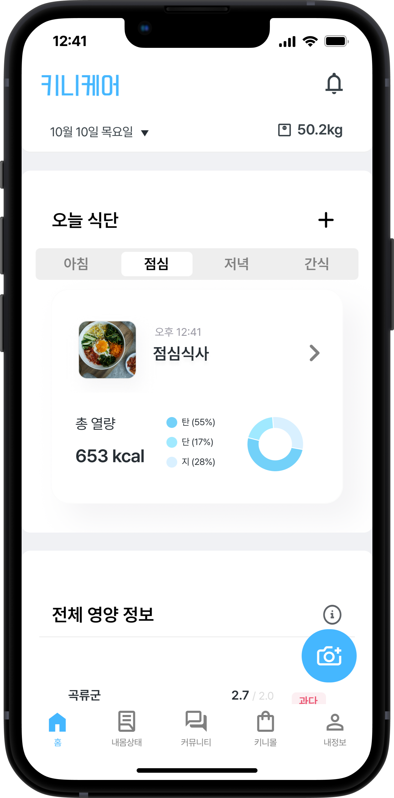

-
UX/UI Renewal
Kinicare App
24.09 - 24.10 I Team Project
Canva I Figma
-

Goal
-
Project Goal
- 팀워크와 커뮤니케이션 스킬 향상
- 문제 해결 능력 강화, 협업을 통한 창의성 증진
- 과정을 단축하는 식단 등록 UX 개선
- 대시보드 형태의 UI 설계로 영양 정보 시각화
UX Strategy
-
UX Vision
당신의 건강, 간편하게 기록하세요!
-
Keywords
-
심플한
단순화된 인터페이스로
사용자 경험 극대화 -
직관적
통일된 디자인과
명확한 네비게이션 -
전문적
그래프, 이미지 등을
적절하게 활용
-
UX Solution
-
AS-IS
- 번거로운 식단 기록 과정
- 시각적 구분이 부족한 검색 결과
- 기록 과정과 정보의 분리로 판단 어려움
- 월간 결과 확인 불가
-
TO-BE
- AI 카메라 활용, 기록 과정 단순화
- 키워드 색상 추가로 쉽게 식별 되도록 함
- 결과를 시각적으로 명확하게 인지 시킴
- 캘린더 추가, 기록 현황 파악 용이
Prototype
-
식단기록
AI 카메라 활용
기록 과정 단순화- 식단 기록 과정 5단계 -> 3단계로 단순화
- 사진만 기록하면 바로 등록 및 영양 정보 확인 가능
-
홈화면
한 눈에 확인 가능한 결과
- 몸무게 및 식단의 영양 정보를 한 화면에 요약 제공
- 기록 결과를 한눈에 확인 가능하여 시각적 인지 용이
-
검색
원하는 정보만 쉽게 식별
- 최근 검색어와 자주 등록한 음식 기능 추가
- 키워드에 진한 색상과 굵기 적용, 식별 용이성 향상
-
내몸상태
캘린더와 그래프로
기록 현황 파악 용이- 캘린더 기능 추가로 이전 기록 손쉽게 확인 가능
- 다양한 그래프 활용으로 가독성을 높임
Style Guide
-
Colors
-
-
Typography
-
Layout
-
Corner radius
-
-
Components
Review
-
Result
- 자동 식단 인식 및 등록 시스템 구현으로 프로젝트 발표에서 청중의 관심과 긍정적인 반응을 얻음
- 브레인스토밍을 통해 기존에 없던 해결 방안 탐색, 창의적인 문제 해결 역량이 강화됨
- 갈등 해결 과정에서 얻은 경험으로, 향후 프로젝트에서 발생할 수 있는 갈등을 최소화할 수 있는 방법 학습
-
Bad
- 미숙했던 초반 리서치와 우선순위 설정
- 사용자 피드백 수집의 어려움
- 팀원 간 의견 충돌 발생
-
Good
- 팀 운영의 체계화와 역할 조정으로 협력 강화
- 지속적인 진행 상황과 피드백 공유
- 디자인 툴 사용법 공유로 팀 작업 효율성 증대
-
Takeaways
- 매끄러운 커뮤니케이션과 협업의 중요성
- 디자인 관련 소스 탐색 방법
- 프로토타입의 필요성과 사용자 경험 기반 개선